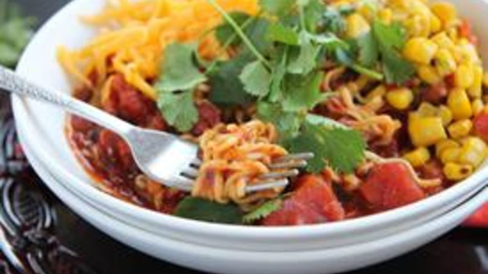

Taco Ramen

Description
An easy way to turn that 10 cent pack of Ramen into a real meal. Just like they do in prison!
Ingredients
- 1 packet Ramen noodles, beef flavor
- 1 (15 ounce) can fire roasted diced tomatoes
- 1/2 cup of water
- 2 tablespoons Old El Paso hot & spicy taco seasoning mix
- 1/2 cup canned chicken
- 1/2 cup frozen honey roasted sweet corn
- 1/2 cup cheddar cheese, shredded
- 1/4 cup cilantro (optional)
Steps
- In a large pot, bring ramen noodles, half of the ramen beef seasoning packet, diced tomatoes, and water to boil. Cook until the noodles are softened, about 3 minutes. Remove from heat and pour into two serving bowls
- Sprinkle remaining ramen beef seasoning over the canned chicken. Place half of the chicken on top of the ramen in each bowl.
- Heat corn in a small bowl, microwave safe bowl until warm, about 1 minute. Place on top of ramen in each bowl.
- Top each bowl with cheddar cheese and cilantro.
- Serve and enjoy!